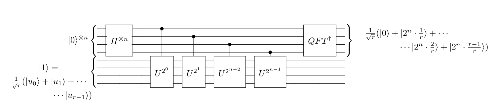

Shor's Algorithm - Implementation
In this section we'll design the algorithm described in Section 2, putting together the classical part, and all quantum ingredients we saw in previous sections.
In order to design a quantum circuit to return the period \(r\) of \(f(x)=a^x~(mod~ 15)\), we'll need a Quantum Phase Estimation Circuit. Although we didn't covered its details here, we're going to explain what it does and you can see the details in the link provided.
What Quantum Phase Estimation (QPE) does is: Given a Unitary operator \(U\) and its eigenstate \(\psi\) (an eigenstate is such that \(U\vert\psi\rangle=e^{i\theta_\psi}\vert\psi\rangle\)) returns its phase \(\theta_\psi\).
Actually, what it really does, is collapsing to \(2^n\theta\), considering \(U\vert\psi\rangle=e^{2\pi i\theta}\vert\psi\rangle\).
In the case of factoring, the Unitary operator will be:
with the eigenstates \(u_s\) having the phase \(2\pi s/r\):
In the below circuit, we'll then measure \(2^ns/r\), but the only thing that matters is that \(r\) is in the denominator, and we can use continued fraction algorithm to extract it. Python have a built-in library for dealing with fractions, and we'll use it, also as a black box, further details of such algorithm can be found in (Nielsen & Chuang, 2011).

The circuit is implemented below, we used the modular exponentiation implementation from Qiskit Textbook, and will treat as a black box, since we don't want to enter in quantum efficiency discussion of this process.
Imports
# Imports
import warnings
warnings.filterwarnings("ignore",category=DeprecationWarning)
from qiskit import QuantumCircuit, Aer, assemble, execute,transpile
from qiskit.circuit.library import QFT
import numpy as np
from math import gcd
from fractions import Fraction
Modular Exponentiation
def a_x_mod15(a, x):
if a not in [2,7,8,11,13]:
raise ValueError("'a' must be 2,7,8,11 or 13")
U = QuantumCircuit(4)
for iteration in range(x):
if a in [2,13]:
U.swap(0,1)
U.swap(1,2)
U.swap(2,3)
if a in [7,8]:
U.swap(2,3)
U.swap(1,2)
U.swap(0,1)
if a == 11:
U.swap(1,3)
U.swap(0,2)
if a in [7,11,13]:
for q in range(4):
U.x(q)
U = U.to_gate()
U.name = "%i^%i mod 15" % (a, x)
c_U = U.control()
return c_U
def modular_exponentiation(given_circuit, n, m, a):
for x in range(n):
exponent = 2**x
given_circuit.append(a_x_mod15(a, exponent),
[x] + list(range(n, n+m)))
def shor_circuit(a,n,m):
# Input : a - guess for factor of 15
# n - number of measurements
# m - number of target qubits
# Setting up circuit
shor = QuantumCircuit(n+m, n)
# Initializing firsts n qubits with Hadamard
shor.h(range(n))
# Applying sigma_x gate to last qubit
shor.x(n+m-1)
shor.barrier()
#Apply modular exponentiation gates
modular_exponentiation(shor, n, m, a)
shor.barrier()
#Apply inverse QFT
shor.append(QFT(n, do_swaps=False).inverse(), range(n))
# measure the first n qubits
shor.measure(range(n), range(n))
return shor
See the illustration of the circuit with \(a=2\)
n = 4; m = 4; a = 2
shor_example = shor_circuit(a,n,m)
shor_example.draw()
┌───┐ ░ ░ »
q_0: ┤ H ├─░────────■─────────────────────────────────────────────────────░─»
├───┤ ░ │ ░ »
q_1: ┤ H ├─░────────┼──────────────■──────────────────────────────────────░─»
├───┤ ░ │ │ ░ »
q_2: ┤ H ├─░────────┼──────────────┼──────────────■───────────────────────░─»
├───┤ ░ │ │ │ ░ »
q_3: ┤ H ├─░────────┼──────────────┼──────────────┼──────────────■────────░─»
└───┘ ░ ┌──────┴──────┐┌──────┴──────┐┌──────┴──────┐┌──────┴──────┐ ░ »
q_4: ──────░─┤0 ├┤0 ├┤0 ├┤0 ├─░─»
░ │ ││ ││ ││ │ ░ »
q_5: ──────░─┤1 ├┤1 ├┤1 ├┤1 ├─░─»
░ │ 2^1 mod 15 ││ 2^2 mod 15 ││ 2^4 mod 15 ││ 2^8 mod 15 │ ░ »
q_6: ──────░─┤2 ├┤2 ├┤2 ├┤2 ├─░─»
┌───┐ ░ │ ││ ││ ││ │ ░ »
q_7: ┤ X ├─░─┤3 ├┤3 ├┤3 ├┤3 ├─░─»
└───┘ ░ └─────────────┘└─────────────┘└─────────────┘└─────────────┘ ░ »
c: 4/═══════════════════════════════════════════════════════════════════════»
»
« ┌───────┐┌─┐
«q_0: ┤0 ├┤M├─────────
« │ │└╥┘┌─┐
«q_1: ┤1 ├─╫─┤M├──────
« │ IQFT │ ║ └╥┘┌─┐
«q_2: ┤2 ├─╫──╫─┤M├───
« │ │ ║ ║ └╥┘┌─┐
«q_3: ┤3 ├─╫──╫──╫─┤M├
« └───────┘ ║ ║ ║ └╥┘
«q_4: ──────────╫──╫──╫──╫─
« ║ ║ ║ ║
«q_5: ──────────╫──╫──╫──╫─
« ║ ║ ║ ║
«q_6: ──────────╫──╫──╫──╫─
« ║ ║ ║ ║
«q_7: ──────────╫──╫──╫──╫─
« ║ ║ ║ ║
«c: 4/══════════╩══╩══╩══╩═
« 0 1 2 3
With the circuit implemented, we can follow with further pre-processing and post-processing of Shor's Algorithm. The code below implements the logic of pseudocode in Section 2 putting everything we saw together. The code is commented to help interpretation.
# Defining the simulator:
backend = Aer.get_backend('qasm_simulator')
def factor(N=15,backend=backend):
found_factors = False
n = len(bin(N))-2
m = n
valid_a = [2,7,8,11,13]
while found_factors == False:
# STEP 1: Choose a randomly in valid a's
if len(valid_a)==0:
break
a = np.random.choice(valid_a)
print(f"Trying a = {a}")
r = 1 #defining a wrong r
# STEP 2: Find period r
while a**r%N != 1: #Adding loop because QPE + continued fractions can find wrong r
## Substep 2.1: Find phase s/r
#Defining Shor's Circuits (QPE):
qc = shor_circuit(a,n,m)
#Doing the measurement (binary):
measure = execute(qc, backend=backend, shots=1,memory=True).result().get_memory()[0]
#Converting to decimal base:
measure = int(measure,2)
phase = measure/(2**(n-1))
## Substep 2.2: Find denominator r (Continued fraction algorithm)
r = Fraction(phase).limit_denominator(N).denominator
# STEPS 3 and 4: check if r is even and a^(r/2) != -1 (mod N)
if r%2==0 and (a**(r/2)+1)%N!=0:
#STEP 5: Compute factors
factors = [gcd(a**(r//2)-1,N),gcd(a**(r//2)+1,N)]
print(f" --- order r = {r}")
if factors[0] not in [1,N]: # Check to see if factor is a non trivial one
found_factors = True
print(f" --- Sucessfully found factors {factors}")
else:
print(f" --- Trivial factors found: [1,15]")
if found_factors == False:
print(f" --- a={a} failed!")
valid_a.remove(a)
factor()
Trying a = 7
--- order r = 4
--- Sucessfully found factors [3, 5]